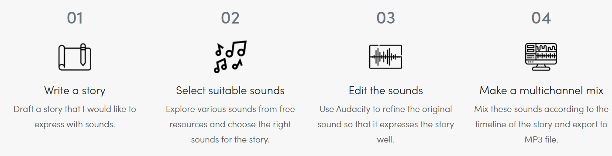

SOUND STORY: ZOMBIE APOCALYPSE
I’m scared. I can hear my heart pounding in my chest, and I can feel the adrenalin coursing through my veins. My breathing quickens as I hear the monsters approaching. I turn around with my gun clutched and I shoot, eyes closed. I hear a thump and open my eyes only to see a woman crouched over a man. Both people I do not know. Screams escape her lips and fill my ears as she begins to realize what I’ve done. I don’t look back as I run into the woods. My alarm goes off and I’m startled awake. I breathe a sigh of relief as I realize it was only a dream. I’m all shaken from the memory of it so I get off my bed and walk to my front door. I look outside and it’s chaos. There is an explosion and a I hear the confused sounds of a panicked crowd. A swarm of people are running for their lives as they begin turning on each other. I can hear the snarls of the dead as they rise up off the ground and begin their hunt for flesh. Helicopters fly above helplessly, but its madness. Cop cars are overturned, their blaring sirens once a symbol of authority now nothing more than a sound that calls to the dead. Time passes and the madness comes to a pause. The world is now quiet here, There’s a pleasant breeze and it is so quiet that the gentle dripping of water droplets can be heard from great distances.
Goal Of The Work :
Cultivate the ability to express stories through sound. Use Audacity or other suitable tools to mix and edit the sounds by choosing the suitable sound from free source websites.
Technical-Asset
